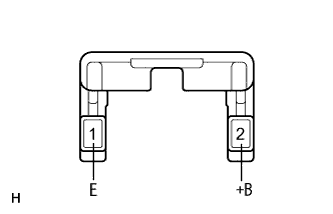

Visor Assembly LH Inspection |
| 1. Inspect Vanity Light Assembly |
 |
Vanity Light Switch Resistance Measurement
Using SST (Toyota electrical tester), measure the resistance between the connector terminals.
| Tester Connection (Terminal Symbol) | Condition | Standard |
|---|---|---|
| 1(E) - 2(+B) | Visor raised | 10 kΩ or higher |
Using SST (Toyota electrical tester), measure the resistance between the connector terminals.
| Tester Connection (Terminal Symbol) | Condition | Standard |
|---|---|---|
| 1(E) - 2(+B) | Visor lowered and mirror cover opened | Below 1 Ω |
| Visor lowered and mirror cover closed | 10 kΩ or higher |